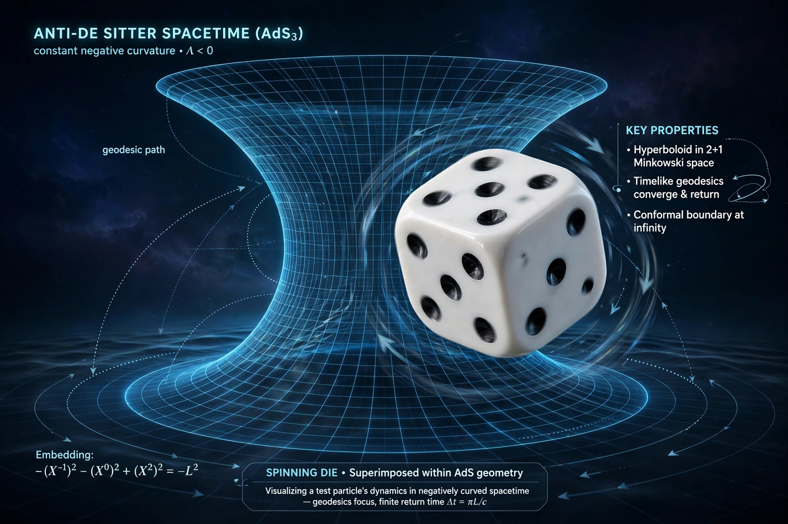

From Wikipedia, the free encyclopedia

Special:Random is a Wikipedia feature that takes the reader to a randomly selected article. Within this AdS subpage series, the feature samples from the cluster of articles about anti-de Sitter space and holography assembled by the project's link graph.
Randomness itself plays a role in AdS research: random tensor networks model how bulk geometry emerges from boundary entanglement, and random matrix theory describes the spectra of black holes in two-dimensional AdS gravity (JT gravity) and its boundary dual, the SYK model.